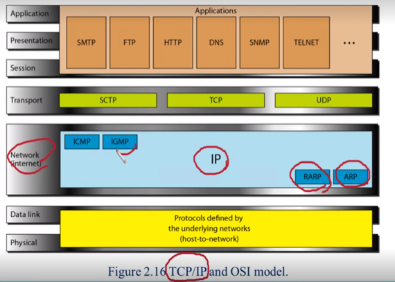
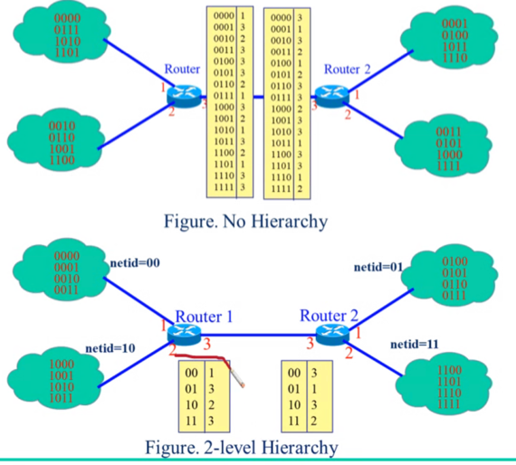
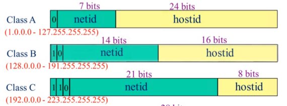
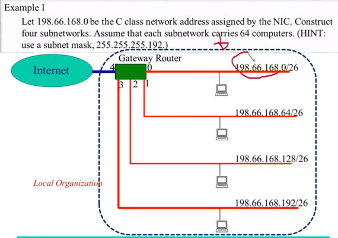
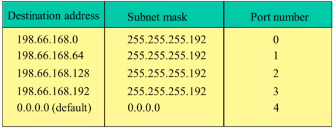
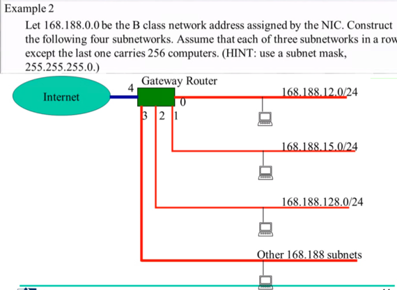
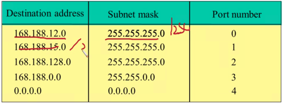
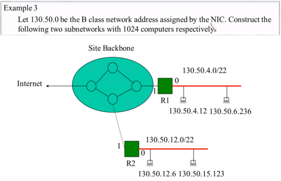
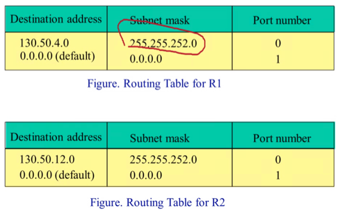

충남대학교 컴퓨터공학과 김상하 교수님의 "컴퓨터 네트워크" 강의를 필기한 내용입니다.
다소 잘못된 내용과 구어적 표현 이 포함되어 있을 수 있습니다.
TCP/IP

- OSI 7계층과 대비되는 TCP/IP계층의 전체적인 구조는 다음과 같다
- 네트워크 계층에서는 IP가 사용되고 나머지 ICMP, IGMP, RARP, ARP는 IP를 보조하는 역할을 하게 되며
- Transport에는 STCP, TCP, UDP가 있지만 TCP가 주로 쓰인다
- Internet Protocol의 약자가 IP이고 Transmission Control Protocol의 약자가 TCP이다
Internet Routing
- 데통시간 배운 Routing에 대해서 복습하고 넘어가자고

- 일단 Routing이라는 것은 수신지의 주소를 이용해 어디로 가야할 지 길을 설정해주는 것인것 기억나제
- 그래서 길을 찾아주기 위해 주소를 key로 하고 나가야 될 port를 value로 하는 테이블을 가지고 있어야 되는데 이세상 모든 컴퓨터들의 주소와 그에 맞는 port를 매칭시켜 테이블을 만드는 것은 테이블의 사이즈도 커지고 찾는데도 오래걸릴것이여
- 따라서 아래의 그림처럼 주소 전체를 key로 하지 않고 주소의 앞 일부분(netid)만 key로 하고 그에 맞는 port를 value로 하되 해당 port로 나가서 접근할 수 있는 컴퓨터는 전부 해당 netid에 속하게 구성하게 된다
- 그렇게 하면 테이블의 사이즈도 작아지고 더 빨리 찾을 수 있기 때문
- 위의 그림에서 보면 netid를 key로 하고 port를 value로 해서 테이블을 구성한 뒤, port로 나갔을때의 호스트 그룹은 전부 같은 netid를 갖고 있는 것을 볼 수 있다

- 그래서 실제로의 IP주소를 보면 위처럼 A, B, C클래스로 나뉘어져 있다
- 일단 어느 클래스에 속하는 주소인지는 맨 처음의 몇개의 비트를 이용해 식별하게 된다
- 그리고 위 그림에 보면 netid랑 hostid가 있는데 netid는 위에서 설명한 것처럼 그루핑을 위한 것이고 이것은 인터넷을 관리하는 기관(Network Information Center)에서 특정 기관(뭐 예를들면 충남대)으로 발급해 주는 값이다
- 그리고 hostid는 netid를 받급받은 기관이 자신이 관리하는 호스트들에다가 나눠주는 값이 되는 거임
- 그래서 만약 큰 기관의 경우에는 NIC에서 A클래스 netid를 발급해주고, 작은 기관에는 C클래스 여러개를 발급해준다던지 그런식으로 사용하게 된다
Routing의 과정
- 일단 들어온 패킷의 Dst Addr를 봐야것제
- 그리고 Router가 가지고 있는 Routing Table(Forwarding Table) 와 Dst Addr를 비교해서 나가야 될 port번호를 알아내게 되는 방식이다
- 그리고 Routing Table은 다른 netid와 통신하는 외부망과의 연결을 위한 routing을 할때(그냥 일반적인 Router)는 netid를 가지고 port를 결정하도록 구성되어 있고
- 동일한netid를 가지는 내부망으로 들어왔을 때에는 주소 전체를 가지고 port번호를 결정하도록 구성 - 얘는 Gateway Router라는 놈이 담당하게 됨
Subnetting

- 봐봐라
- 위처럼 198.66.168.xxx의 netid를 할당받은 기관에서 Gateway router를 이용해 내부망에 대한 라우팅을 할때
- 256개의 호스트를 전부 하나의 랜선에 연결해 들어오면 알아서 모든 호스트를 방문해 찾아가도록 하거나
- 그냥 전부 router에 다 연결해놓고 router가 256개의 주소에 대한 port번호를 가지게 할 수도 있지만
- 위 그림처럼 64개의 호스트별로 묶어서 0, 1, 2, 3의 포트번호를 할당하고 hostid의 범위에 따라 다른 포트번호로 나가게 하는 것이 더 효율적이더라
- 그리고 데통때 배운거처럼 이렇게 하는게 근접해있는 호스트끼리 묶어 소그룹(뭐 부서라던지)별 routing을 하는 것이 정리정돈 하는데에도 더 좋다더라

- 따라서 위와 같은 경우라면 Gateway router는 위의 그림과 같은 routing table을 가질 수 있다
- 뭐 subnetting하는 방법은 데통때 배워서 알겠지만
- 위의 예제에서 /26가 (1)26개와 (0)6개의 비트를 의미하는 거고 이것이 곧 subnet mask가 되어 위의 테이블에 subnet mask가 255.255.255.192로 설정되어 있는 거고
- 패킷의 Dst Addr와 subnet mask를 bitwise AND해서 나온 결과(Network Address라고 표현한다)가 테이블 첫번째 열의 Destination Address와 같으면 테이블의 세번째 열의 Port number로 routing하는 방식이라는 거 기억해내면 끝임
- 만약에 매치되는게 없을때에는 해당 내부망으로 들어오지 말고 다시 왔던길로 나가라는 의미에서 subnet mask 0.0.0.0에 destination address 0.0.0.0로 설정해 위에서 매치되지 않은 모든 address를 잡아내도록 되어 있고 이때의 port number가 들어왔던 포트번호인 4번으로 되어 있는 것이다
- 그래서
- Routing table의 한 행을 Destination address / Subnet Mask 로 표현하되 된다는 것 - 뭐 192,66,168.128/26처럼
- 그리고 Subnet mask를 구성할때는 연속된 1이 나오다가 0이 나오면 그때부터는 전부 0이 등장하는 방식으로 Subnet mask가 생성돼야 한다는 점
- /26일 경우에는 32 - 26 = 6이기 때문에 하나의 포트에는 64개의 호스트가 연결되고 마지막 8비트 중 첫 2개의 비트가 1이기 때문에 4개의 포트가 존재한다는 점등을 알아낼 수 있어야 한다.


- 위의 예제도 기본적으로는 똑같다
- Subnet mask가 /24이기 때문에 한 포트에는 기본적으로 255개가 붙고
- 168.188.12.xxx의 경우에는 0번 포트
- 168.188.15.xxx의 경우에는 1번 포트
- 168.188.128.xxx의 경우에는 2번 포트로 묶은 대신
- 나머지의 168.188.xxx.xxx의 경우에는 /16으로 subnet mask를 설정해 다른 서브넷으로 빠져나가 인접한 기관에서 사용하는 등 활용할 수 있게 하는 예제이다
- 뭐 별로 어려운건 없쥬?


- 그리고 위의 예제처럼 하나의 router에 1024개를 붙이기 위해 /22의 subnet mask를 설정해 network address가 특정 destination address가 될때만 들어오고 아니면 나가게 할 수도 있다
- 대신 위의 예제들과의 차이점은 하나의 Router에 여러개의 포트를 두어 각각의 포트로 빠져나가게 하는 것이 아닌 여러개의 router를 두고 각각의 router에는 포트를 하나만 두어서 분기하는것도 가능하다 이거야